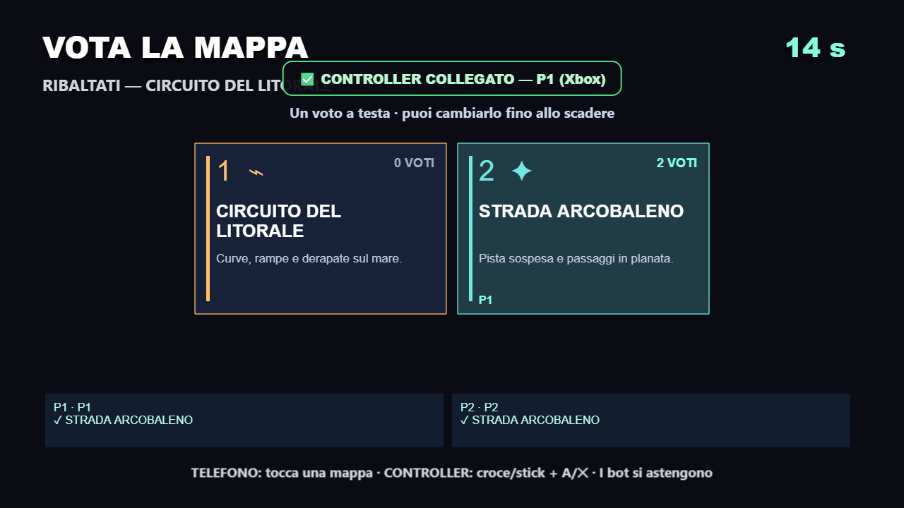
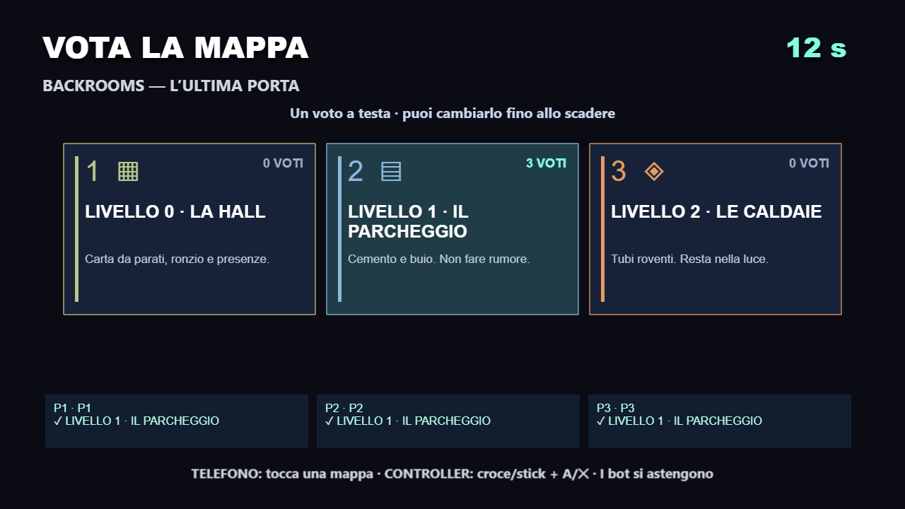
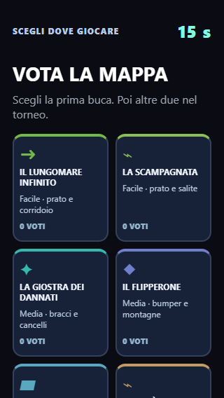

Minigolf: il voto decide la prima buca. Il torneo continua con altre due buche diverse.

Ribaltati: Litorale o Arcobaleno, con cursore personale per chi usa il controller.

Backrooms: il livello scelto viene caricato alla fine della votazione.

Telefono: scelte leggibili, lista scorrevole e conto alla rovescia sempre visibile.
Un voto per giocatore umano; i bot si astengono. In caso di parità si sorteggia tra le mappe più votate. I giochi con una sola mappa partono con il flusso consueto.